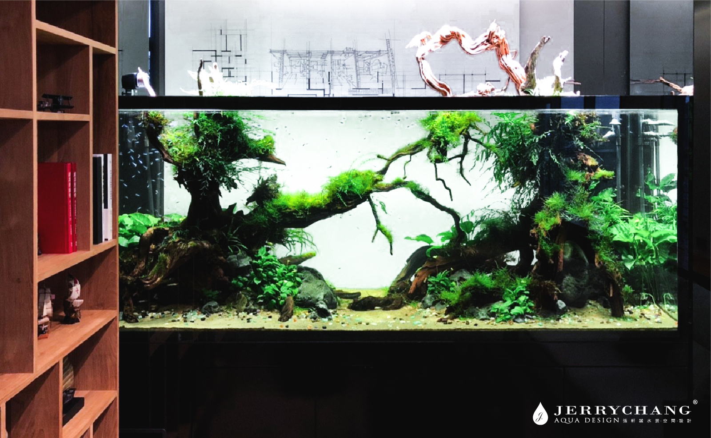
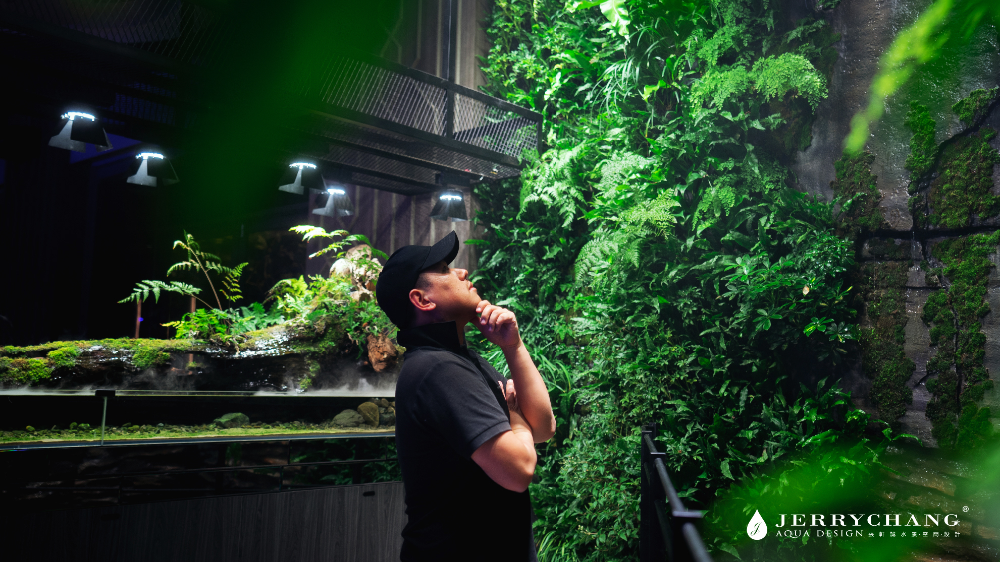

01
AQUASCAPING水族造景設計
依缸體尺寸與空間條件，規劃沉木、岩石、水草及設備配置。
從一座魚缸，到日常裡的自然風景。
依照場域條件與使用需求，
規劃適合生活的水景。
DESIGN WITH NATURE. LIVE WITH LIFE.

NATURE IN YOUR SPACE
SPACE / NATURE / BALANCE水景不只是視覺焦點，也是一種與自然相處的方式。從缸體比例、光線、設備，到日常養護，每個細節都影響它如何融入生活。
魚缸先生希望從你的空間與使用需求出發，探索兼具美感與照護便利性的設計方向。
了解規劃流程 →依缸體尺寸與空間條件，規劃沉木、岩石、水草及設備配置。
整合植栽、水景與自然材質，探索與室內空間相容的設計方式。
規劃玻璃缸中的植物、水陸構成與光線，呈現微型自然景觀。
依植物與造景需求，討論照明配置、修剪與設備維護方式。
影像選自參考網站，供水景形式與設計方向討論；非魚缸先生已完成的實際案例。
確認空間類型、尺寸、預算與偏好。
以參考圖片或 AI 概念圖，討論造景與設備方向。
釐清設計配置、執行內容與維護需求。
依最終方案討論日常照護與維護安排。
選擇尺寸、造景風格與擺放位置，生成一張概念圖，作為後續討論的起點。
選擇左側條件，探索適合空間的水景方向。
圖片會依本機生成速度完成，請稍候。
00:00正在確認生成服務…
不同的光線，會改變水景與空間的觀看方式。
透過日夜模擬，先感受照明方向的差異。
A.可以先提供擺放位置、空間條件與偏好，作為討論的起點。
A.需依尺寸、造景材料、設備及執行內容確認。表單中的預算區間用於初步需求整理。
A.AI 圖片用於視覺方向討論。實際尺寸、材料、設備與可行性仍需確認。
A.可以先以純水草造景或雨林生態方向討論，再依空間與養護需求選擇形式。
已有初步方向，或仍在探索，都可以從一次諮詢開始。